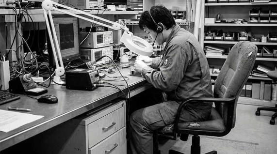
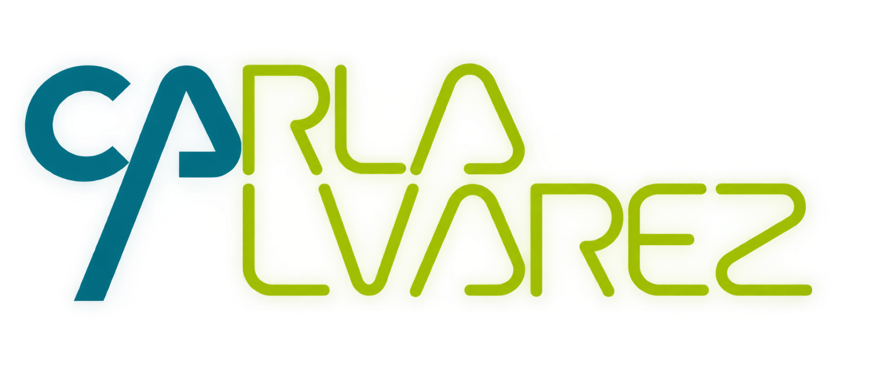
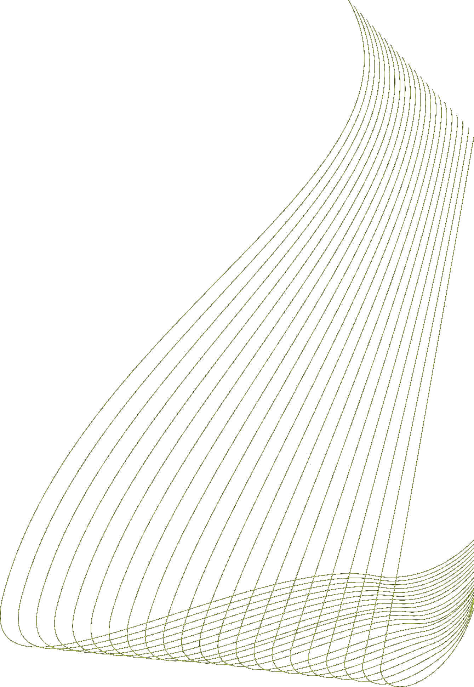
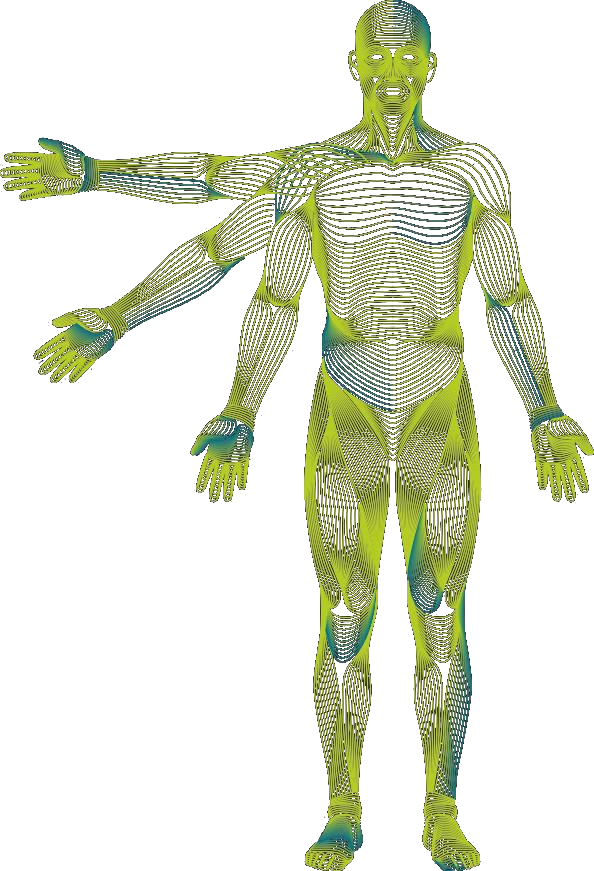
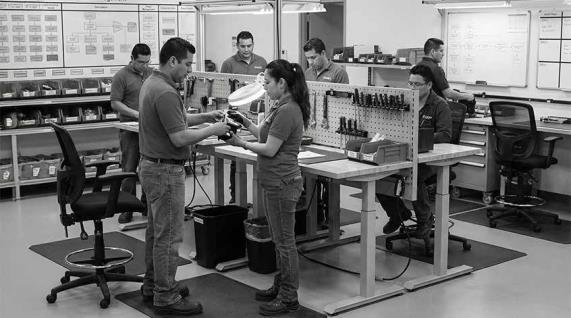

01 / SSTEVALUACIÓN ERGONÓMICA DEL PUESTO
Analizamos posturas, esfuerzos, movimientos repetitivos, estrés de contacto y condiciones del entorno para identificar riesgos y oportunidades de mejora en la tarea.

Soluciones ergonómicas orientadas a prevenir lesiones y mejorar el desempeño operativo en entornos laborales reales.


Observamos el trabajo real y proponemos mejoras prácticas adaptadas al contexto operativo.

01 / SSTAnalizamos posturas, esfuerzos, movimientos repetitivos, estrés de contacto y condiciones del entorno para identificar riesgos y oportunidades de mejora en la tarea.
Diseñamos acciones preventivas simples y efectivas que se integran al trabajo diario, reduciendo riesgos antes de que se manifiesten.
Analizamos aspectos del trabajo que influyen en el bienestar, el ritmo laboral y la comunicación, fortaleciendo el clima laboral y la sostenibilidad del desempeño.
Realizamos evaluaciones objetivas y globales que integran los riesgos físicos con la percepción del trabajador, generando diagnósticos claros y accionables.

05 / SSTEvaluamos la distribución de tareas, tiempos y flujos operativos para disminuir sobrecargas y mejorar el rendimiento global del equipo.
Proponemos ajustes en puestos, métodos y herramientas para facilitar la tarea, reducir el esfuerzo innecesario y mejorar la experiencia de trabajo.
En entornos operativos complejos, la ergonomía no puede gestionarse como una acción aislada. Requiere un sistema estructurado, dinámico y orientado a resultados. El modelo VCAP integra diagnóstico, intervención y mejora continua, adaptado a su realidad.
Evaluación técnica basada en métodos reconocidos para medir y clasificar los riesgos en el sistema de trabajo.
Desarrollo de estrategias de intervención alineadas con la operación y los recursos de su empresa.
Puesta en marcha práctica de los controles ergonómicos garantizando la aceptación del personal.
Aseguramiento de la sostenibilidad técnica y madurez de la cultura preventiva en la organización.
En nuestros proyectos, fusionamos el cumplimiento estricto de la legislación boliviana con los estándares internacionales más avanzados. Este marco garantiza soluciones con validez legal y precisión científica, optimizando tanto el bienestar del trabajador como la productividad de la empresa.
Nuestra gestión asegura la conformidad ante entes reguladores bolivianos según normativa SST (NTS & NB).
Criterios técnicos de alta precisión para el análisis de factores humanos y diseño ergonómico de ingeniería.
Especialista en Ergonomía & Diseñadora Industrial
Diseñadora Industrial de la Universidad de Chile, especialista en Ergonomía y con formación de posgrado en Educación Superior.
Cuenta con formación internacional en Evaluación de la Ergonomía de Puestos de Trabajo por la Universitat Politècnica de València, España.
Actualmente realiza un Doctorado en Ciencias de la Ingeniería, centrado en el desarrollo de un sistema complejo de gestión ergonómica.
Cuenta con amplia experiencia en docencia e investigación universitaria, así como en la producción académica, con libros y artículos científicos vinculados al diseño, la ergonomía y la ingeniería.
Contamos con un equipo multidisciplinario de profesionales especializados, comprometidos con brindar servicios técnicos basados en conocimiento especializado, experiencia y criterios profesionales reconocidos.
Certified Occupational Hygienist (HOC) sept. 2024 - 2029 ID de la credencial: No- JIHO.0021
Specialist Exposure Decision Analysis EDA nov. 2022 - 2027 ID de la credencial: ID: 297462
Conversemos sobre cómo optimizar la salud de sus colaboradores y la eficiencia de sus operaciones.
Especialista en Ergonomía Industrial
Av. José María Avilés Nº 3547. Tarija - Bolivia.